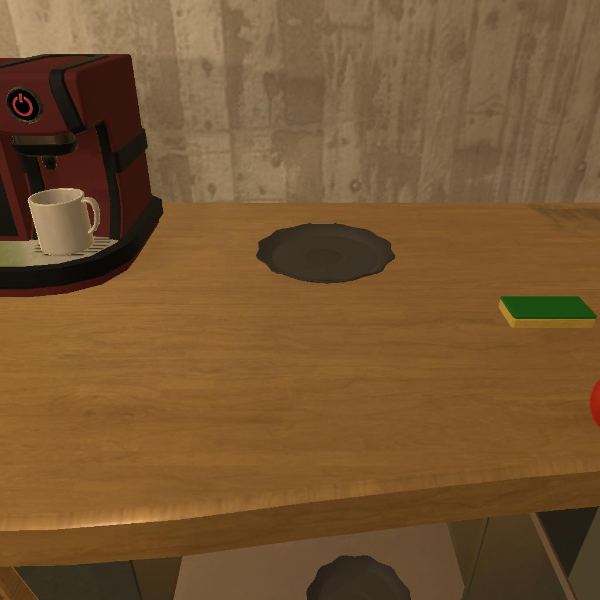

---------------------------------------------------------task: 26---------------------------------------------------------
--------------------------------------------------------------------------------------------------------------------------------------------------------------------
--------------------------------------------------------------------------------------------------------------------------------------------------------------------
Step:--------------------------------------------------------------------------5-------------------------------------------------------------------------------
----------------------------------------
VLM Prompt:
**Task**
Please perform as an embodied AI agent. Our final objective is to put two kettle in cabinet. Below is the plan for completing the task, the current observation, alongside historical data and admissible actions for the next step. Please determine the best action for the next step!
**Plan**
Below is a detailed step-by-step plan to complete the task.
1. Find a kettle.
2. Pick up the kettle.
3. Find a cabinet.
4. Place the picked-up kettle in the cabinet.
5. Find another kettle.
6. Pick up the kettle.
7. Return to the previously located cabinet.
8. Place the second picked-up kettle in the cabinet with the first kettle.
**Current Observation**
Displayed is an image capturing the current position of the agent.
Objects in The Image: ['coffee maker', 'cup', 'table', 'saucer', 'sponge']
**History Information**
Displayed are the previous observations with their corresponding actions.
State 0:
No history.
State 1:
1. Step Index in the Plan: 1
2. Objects: Sink (without kettle)
3. Action: go to countertop 1
State 2:
1. Step Index in the Plan: 1
2. Objects: Countertop, Lettuce, Apple, Bread, Plastic Cup
3. Action: go to coffeemachine 1
State 3:
1. Step Index in the Plan: Unknown (assumed next step after finding the statue)
2. Objects: Coffee Maker, Coffee Cup
3. Action: go to cabinet 1
State 4:
1. Step Index in the Plan: Likely after finding the kettle
2. Objects: Coffee Machine, Coffee Cup, Wooden Counter
3. Action: open cabinet 1
State 5:
1. Step Index in the Plan: Unknown
2. Objects: Coffee Maker, Coffee Cup, Wooden Counter, Cabinet 1 (opened)
3. Action: close cabinet 1
**Admissible Actions**
(1): go to countertop 1
(2): go to coffeemachine 1
(3): go to cabinet 2
(4): go to drawer 1
(5): go to sink 1
(6): go to sinkbasin 1
(7): go to cabinet 3
(8): go to garbagecan 1
(9): go to cabinet 4
(10): go to drawer 2
(11): go to fridge 1
(12): go to microwave 1
(13): go to dresser 1
(14): go to sidetable 1
(15): go to drawer 3
(16): go to drawer 4
(17): go to drawer 5
(18): go to drawer 6
(19): go to drawer 7
(20): go to drawer 8
(21): close cabinet 1
(22): take plate 1 from cabinet 1
(23): take mug 1 from cabinet 1
(24): take plate 2 from cabinet 1
(25): take dishsponge 1 from cabinet 1
(26): take tomato 1 from cabinet 1
**Analysis Guideline**
1. Analyze the history and current observation, and then determine our current step in the plan and our current place.
2. List all visible objects related to the task in the current observation, without summarizing any as "various items."
3. Analyze the objects in the current observation based on the history and the requirements for the current step, and then determine if we can complete the step with the current observation.
4. Analyze and decide on the most appropriate action to take.
5. Summarize the analysis using the following format: "Analysis: [The summarization of the analysis], The Most Appropriate Action: (i which is the integer.): [Selected action]"
**Notes**
1. We must complete each step of the plan in order and cannot skip steps when the previous ones are not finished.
2. For "Go to" actions listed as "go to xxx [n]", interpret this as there are n distinct actions available: "go to xxx 1", "go to xxx 2", ..., "go to xxx n". Select one specific action from these options instead of using "go to xxx [n]".
3. If receptacles such as drawers, cabinets, and so forth are closed in the current observation, we may try to open them.
4. Pay attention to synonyms and ensure clarity in the terms used.
5. We must determine and provide the single action which must be in the **Admissible Actions**.
6. If there is no history available, we are at the first step and the current place is "Unknown".
**Answer**
Please select the most suitable action by following the **Analysis Guideline**, keeping the above **Notes** in mind.
----------------------------------------
----------------------------------------
VLM Response:
Analysis: The current step in the plan is not explicitly stated, but based on the history information provided, the agent has already found a kettle, likely picked it up (since the plan to place the kettle in the cabinet was initiated), found a cabinet, and the last known action was to close cabinet 1. However, there is no confirmation that a kettle was placed inside cabinet 1. The current observation does not show a kettle or a cabinet, indicating that the agent might need to find another kettle or verify the placement of the first one. The visible objects in the current observation are a coffee maker, a cup, a table, a saucer, and a sponge. None of these objects are relevant to the current step, which should be either to verify the placement of the first kettle in a cabinet or to find another kettle. Since we cannot confirm the placement of the first kettle and the history suggests that the agent was in the process of interacting with a cabinet, the most appropriate next action is to return to a cabinet, specifically one that has not been interacted with before, as cabinet 1 has already been opened and closed.
The Most Appropriate Action: (3): go to cabinet 2
----------------------------------------
----------------------------------------
>>> Refine VLM Response and Get Pure Action: go to cabinet 2
----------------------------------------
-----------------------------------------------------------------
Running time: 10.82630968093872 seconds
Total Money: 0
-----------------------------------------------------------------
-----------------------------------------------------------------
Summarization Prompt:
**Context**
Analysis: Since there is no history information, we are at the first step in the plan, which is to find a statue. The current place is unknown. In the current observation, we see a floorlamp next to an armchair with a small table that has a small object on it, which could potentially be the statue we are looking for. Since the plan requires us to find a statue first and it appears there might be one on the table next to the armchair, we should investigate this object to determine if it is the statue we need.
The Most Appropriate Action: (1): go to armchair 1
**Summary**
1. Step Index in the Plan: 1
2. Objects: Floorlamp, Armchair, Small Table, Small Object (potential statue)
3. Action: go to armchair 1
**Context**
Analysis: The current step in the plan is not explicitly stated, but based on the history information provided, the agent has already found a kettle, likely picked it up (since the plan to place the kettle in the cabinet was initiated), found a cabinet, and the last known action was to close cabinet 1. However, there is no confirmation that a kettle was placed inside cabinet 1. The current observation does not show a kettle or a cabinet, indicating that the agent might need to find another kettle or verify the placement of the first one. The visible objects in the current observation are a coffee maker, a cup, a table, a saucer, and a sponge. None of these objects are relevant to the current step, which should be either to verify the placement of the first kettle in a cabinet or to find another kettle. Since we cannot confirm the placement of the first kettle and the history suggests that the agent was in the process of interacting with a cabinet, the most appropriate next action is to return to a cabinet, specifically one that has not been interacted with before, as cabinet 1 has already been opened and closed.
The Most Appropriate Action: (3): go to cabinet 2
Please summarize the context by following above examples when providing the summary, and ensure that only the summary is included, without any extra explanation.
**Summary**
-----------------------------------------------------------------
-----------------------------------------------------------------
Summarization Response:
1. Step Index in the Plan: Unclear (either verifying kettle placement or finding another kettle)
2. Objects: Coffee Maker, Cup, Table, Saucer, Sponge (none relevant to the current step)
3. Action: go to cabinet 2
-----------------------------------------------------------------
-----------------------------------------------------------------
Text Observation:You arrive at loc 3. The cabinet 2 is closed.
-----------------------------------------------------------------
UNSUCCEED